HTML5를 활용한
Front-End 성능 개선
Front-End 성능 개선
Created by 손찬욱 / chanuk.son
성능 이란 무엇인가?
RAIL performance model
 developers.google.com http://goo.gl/axNG6r
developers.google.com http://goo.gl/axNG6r
오늘은
Loading
에 대해서만 이야기합니다
로딩 과정의 이해
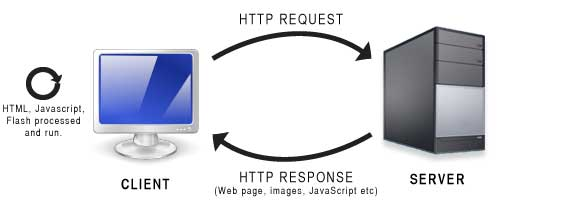Connect / Request / Response
자원 요청에 대한 과정

Stalled == Browser waiting
TTFB == Server Time
Waterfall Chart
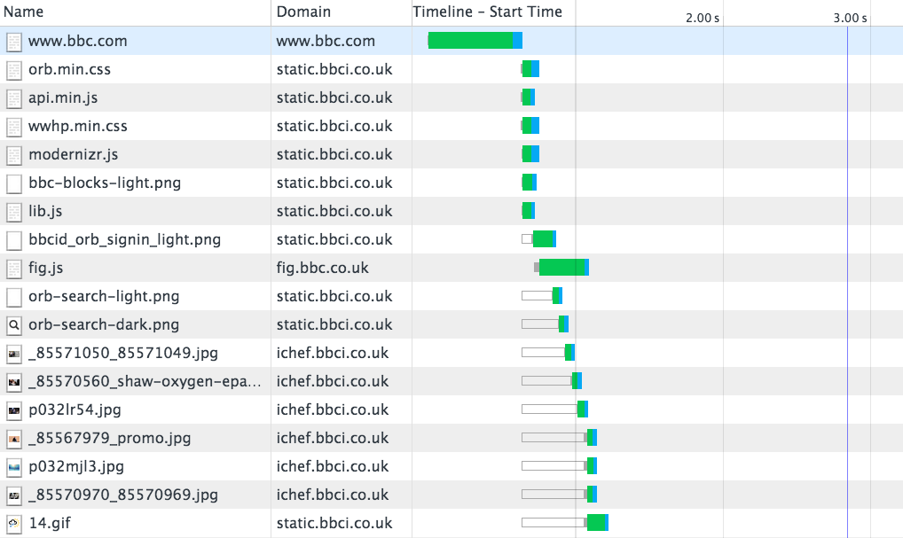Front End 성능 개선이란?
Waterfall chart를 어떻게 개선할 것인가?
우리가 개선할 페이지는?
30 Request, 2.0MB transfered
[raw] [tuning1] [tuning2] [tuning3] [localStorage]요청 수 최소화 하기
Waterfall chart의 높이 줄이기
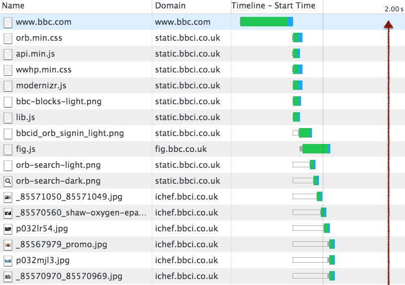HTTP Request 수를 줄이자
왜?
HTTP Request 수가 많으면 느린가?
NETWORK COST
DNS Lookup, Connection, Server time, Download, ...

3G 접속일 경우, 특히 connection에 대한 비용이 많이 발생함
HTTP 구성에 따른 전송량의 증가
HTTP Header, Cookie
DOMAIN 당 연결할 수 있는
CONNECTION 수가 정해져 있음

Browserscope : http://goo.gl/ZhFwaF
HOW TO?
- 자원의 Merge
- 불필요한 자원의 제거
- 자원의 재사용 (Cache)
- 초기 로딩 속도에 필요 없는 자원 나중에 로딩
- ...
JS, CSS의 Merge
Grunt, gulp와 같은 자동화 툴을 이용한 자동 merge
IMAGE의 Merge (CSS Sprite)
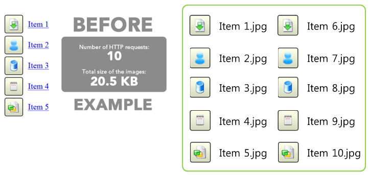IMAGE의 Merge (CSS Sprite)
background-image/position을 이용한 CSS Sprite
#nav li a { background-image:url("image_nav.gif"); }
#nav li a.item1 { background-position: 0px 0px; }
#nav li a.item2 { background-position: -72px 0px; }
#nav li a.item3 { background-position: -144px 0px; }
HTML5를 이용한 요청수 줄이기
IMAGE 제거 (CSS3 Effect)

6KBytes 이미지
IMAGE 제거 (CSS3 Effect)
.docIcon {
background:#eee;
display:block;
width:80px;
height:112px;
position:relative;
margin:42px auto;
border:1px solid #ccc;
/*
background:-webkit-linear-gradient(top, #ddd 0, #eee 15%, #fff 40%, #fff 70%, #eee 100%);
box-shadow:inset rgba(255,255,255,0.8) 0 1px 1px;
border-radius:3px 15px 3px 3px;
*/
}
.docIcon:before {
/*
content:"";
display:block;
position:absolute;
top:0;
right:0;
width:30px;
height:30px;
background:#ccc;
*/
/*
background:-webkit-linear-gradient(45deg, #fff 0, #eee 50%, #ccc 100%);
box-shadow:rgba(0,0,0,0.05) -1px 1px 1px, inset white 0 0 1px;
border-bottom:1px solid #ccc;
border-left:1px solid #ccc;
*/
/*
border-radius:0 14px 0 0;
*/
}
.docIcon:after {
/*
content:"";
display:block;
position:absolute;
left:0;
top:0;
width:60%;
height:36px;
background:#ccc;
*/
/*
background:-webkit-linear-gradient(top, #ccc 0, #ccc 20%, #fff 20%, #fff 40%, #ccc 40%, #ccc 60%, #fff 60%, #fff 80%, #ccc 80%, #ccc 100%);
*/
/*
margin:40px 20% 0;
*/
}
IMAGE 제거 (CSS3 Effect)
6배의 용량 감소
1KBytes CSS3 Effect
CSS BUTTON
http://www.bestcssbuttongenerator.com
CSS ICON
http://tympanus.net/Development/IconHoverEffects/
Loading
http://codepen.io/hsucherng/full/bdEmA
LocalStorage 이용한 성능 개선
클라이언트의 Database를 이용하여 Request수를 줄인다.
브라우저 캐쉬를 이용하면 안되는가?
브라우저 캐시는 제한이 있다.
limit를 초과한 경우, 기존 캐싱 자원이 삭제됨
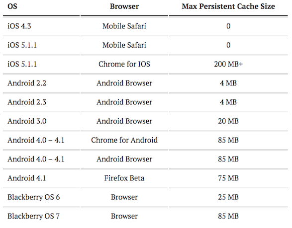www.guypo.com : goo.gl/tl7bJm
LocalStorage는 빠르다
Smartphone Browser localStorage is
up to 5x Faster than Native Cache
www.mobify.com : http://goo.gl/xqJPR2
window.localStorage
// setItem, getItem
localStorage.setItem("성능", "느림");
localStorage.getItem("성능"); // "느림"
// like object
localStorage["개선"] = "HTML5";
localStorage["개선"]; // "HTML5"
- 도메인 별로 영구적으로 저장된다
- key/value 쌍으로 저장한다
- key/value 모두 string으로 저장된다
JS,CSS의 LocalStorage를 이용한 캐싱
자주 변경이 되지 않는 파일에 대해서는 localStorage를 이용해 확실하게 캐싱되도록 처리
LocalStorage를 이용하는 Flow
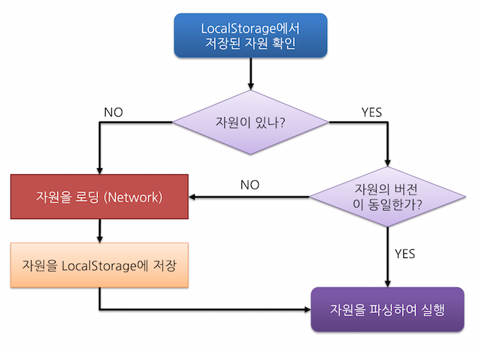LocalStorage를 캐싱을 지원하는 오픈소스
http://addyosmani.github.io/basket.js/
LocalStorage 적용
LocalStorage에 Javascript가 저장된것을 확인 할수 있다
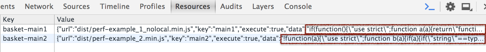실제 예제는 마지막 장에서...
얼마나 개선되었나?
11 Request, under 2.0MB transfered
[raw] [tuning1] [tuning2] [tuning3]요청 크기 최소화 하기
Waterfall chart의 폭 줄이기
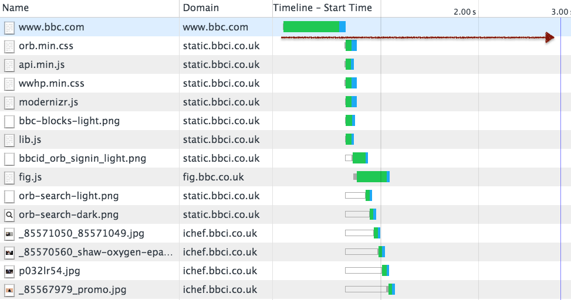HTTP Request 양을 줄이자
HOW TO?
- 자원의 크기를 최소화
- HTTP Request Header 줄이기
- Gzip compress
- ...
Minify와 Obfuscation
function isHWAccelerable() {
var result = false;
var agent = this.agent();
var osVersion = agent.os.version;
var browser = agent.browser.name;
var browserVersion = agent.browser.version;
var useragent;
// chrome (less then 25) has a text blur bug.
// but samsung sbrowser fix it.
if (browser.indexOf("chrome") !== -1) {
result = browserVersion >= "25";
} else if (/ie|firefox|safari|inapp/.test(browser)) {
result = true;
} else if (agent.os.name.indexOf("android") !== -1) {
useragent = (ua.match(/\(.*\)/) || [null])[0];
// android 4.1+ blacklist
// EK-GN120 : Galaxy Camera, SM-G386F : Galaxy Core LTE
// SHW-M420 : Galaxy Nexus , SHW-M200 : NexusS , GT-S7562 : Galaxy S duos
result = (osVersion >= "4.1.0" && !/EK-GN120|SM-G386F/.test(useragent)) ||
(osVersion >= "4.0.3" &&
/SHW-|SHV-|GT-|SCH-|SGH-|SPH-|LG-F160|LG-F100|LG-F180|LG-F200|EK-|IM-A|LG-F240|LG-F260/.test(useragent) && !/SHW-M420|SHW-M200|GT-S7562/.test(useragent));
}
return resultCache(this, "isHWAccelerable", [result, agent], result);
}
1,000 Bytes
Minify와 Obfuscation
주석제거, 공백 제거 (687 Bytes)
function isHWAccelerable(){var result=false;var agent=this.agent();var osVersion=agent.os.version;var browser=agent.browser.name;var browserVersion=agent.browser.version;var useragent;if(browser.indexOf("chrome")!==-1){result=browserVersion>="25";}else if(/ie|firefox|safari|inapp/.test(browser)){result=true;}else if(agent.os.name.indexOf("android")!==-1){useragent=(ua.match(/\(.*\)/)||[null])[0];result=(osVersion>="4.1.0"&&!/EK-GN120|SM-G386F/.test(useragent))||(osVersion>="4.0.3"&&/SHW-|SHV-|GT-|SCH-|SGH-|SPH-|LG-F160|LG-F100|LG-F180|LG-F200|EK-|IM-A|LG-F240|LG-F260/.test(useragent)&&!/SHW-M420|SHW-M200|GT-S7562/.test(useragent));}
return resultCache(this,"isHWAccelerable",[result,agent],result);}
변수명 난독화 (491 Bytes)
function isHWAccelerable(){var e,r=!1,s=this.agent(),t=s.os.version,i=s.browser.name,a=s.browser.version;return-1!==i.indexOf("chrome")?r=a>="25":/ie|firefox|safari|inapp/.test(i)?r=!0:-1!==s.os.name.indexOf("android")&&(e=(ua.match(/\(.*\)/)||[null])[0],r=t>="4.1.0"&&!/EK-GN120|SM-G386F/.test(e)||t>="4.0.3"&&/SHW-|SHV-|GT-|SCH-|SGH-|SPH-|LG-F160|LG-F100|LG-F180|LG-F200|EK-|IM-A|LG-F240|LG-F260/.test(e)&&!/SHW-M420|SHW-M200|GT-S7562/.test(e)),resultCache(this,"isHWAccelerable",[r,s],r)}
50.9% 감소
Minify와 Obfuscation
Grunt, gulp와 같은 자동화 툴을 이용한
HTML, CSS minified와 JS minified,obfuscation
이미지 크기 줄이기
이미지의 크기를 결정하는 요인
- 이미지의 포맷
- 이미지의 사이즈
이미지 포맷
이미지의 크기를 결정하는 요인
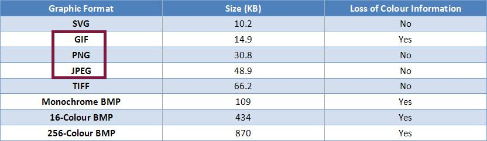 svgopen.org : http://goo.gl/cwTZ6h- PNG : png-8, png-24에 따라 용량 차이가 남.
- JPEG : 압축률 70~90%에 따라, 용량이 작아짐
* 용량이 작은 WebP 포맷은 Chrome, Android 4.1+ 만 지원
이미지 포맷 기준
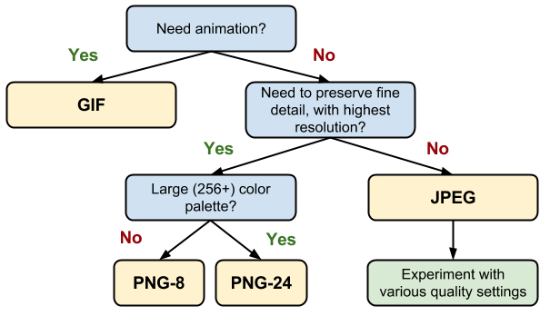developers.google.com : http://goo.gl/IeQuI3
이미지 사이즈
사이즈가 크면 클수록 용량은 배로 증가
Pixel 수(width * height) * 표현할 수 있는 컬러 수
고해상도 (레티나) 대응을 위해,
실제 표현하는 사이즈 보다
2배 이상으로 사이즈 조정
HTML5를 이용한 반응형 이미지
srcset을 이용
<img srcset="retina-image.jpg 2x" src="image.jpg" alt="an image" />
화면의 pixel ratio에 맞는 이미지를 사용
picture를 이용
<picture>
<source media="orientation:landscape"
srcset="retina-horizontal-image.jpg 2x, horizontal-image.jpg" />
<source media="orientation:portrait"
srcset="retina-vertical-image.jpg 2x, vertical-image.jpg" />
<img src="image.jpg" alt="an image" />
</picture>
화면의 회전상태에 따라
화면의 pixel ratio에 맞는 이미지를 사용
얼마나 개선되었나?
11 Request, 546 KB / 870 KB transfered
[raw] [tuning1] [tuning2] [tuning3]랜더링 빠르게 하기
Waterfall chart의 간격 줄이기

브라우저 랜더링 과정
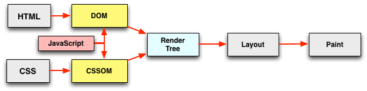TTFB (Time To First Bytes) 이후, 병렬로 랜더링을 한다.
자원의 위치에 따른 랜더링
적절한 자원의 위치 선정
- 시각적으로 빠른 화면을 제공하기 위해, head에는 꼭 레이아웃 구성에 꼭 필요한 CSS 파일만 넣는다.
- BODY 태그 안에서는 CSS나 Script를 넣지 않는다. 전체 랜더링이 잠시 중단된다
- Script는 body 태그 닫기 전에 넣는다.
First Paint Time
초기 화면에 무엇인가 되도록 빠른 시점에 출력되도록 하면 체감적인 속도향상을 느끼게 할 수 있다.
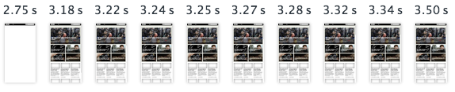스크립트는 다양한 작업을 수행하는 코드로 이루어져 있고, DOM을 변경하는 작업들이 포함되어 있을 수 있기 때문에, 블록 된다.
document.write("paused HTML parsing");
HTML5를 이용한 스크립트 로딩
defer를 이용
HTML 파싱이 완료된 이후에, 스크립트를 실행
<script defer src="js.js"></script>
<script defer> // script codes </script>
async를 이용
스크립트를 실행할 때만, HTML 파싱이 중단
<script async src="js.js"></script>
<script async="false" src="js.js"></script>
<script async> // script codes </script>

async=false일 경우, 순서 보장 (기본값은 true)
defer와 async의 적절한 사용
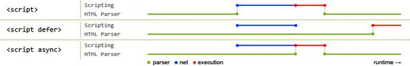DOM 제어와 관련이 있는 스크립트는 defer를 사용
DOM 제어와 관련이 없고, 가능한 의존성이 없는 스크립트는 async를 사용
얼마나 개선되었나?
11 Request, 546 KB / 870 KB transfered
But, improved rendering
[raw] [tuning1] [tuning2] [tuning3]LocalStorage를 사용하면
얼마나 개선되나?
10 Request, 351 KB transfered
[raw]